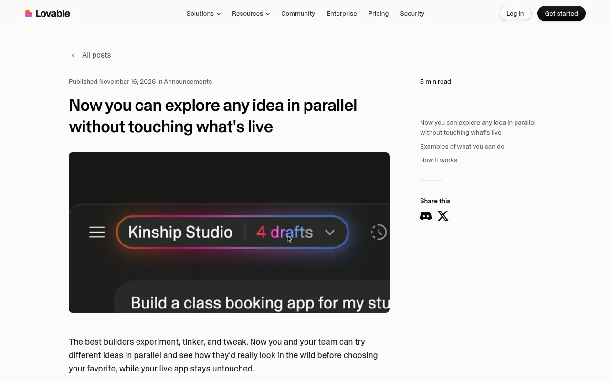
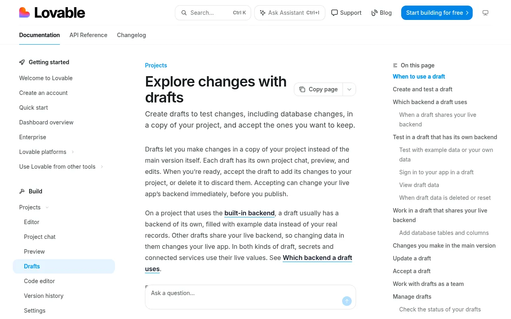

相隔几天的两次发布指向同一个方向。11 月 16 日，Lovable 推出 Drafts ：在编辑器顶部点项目名，再点「New draft」，就会得到应用的完整副本——从设计到数据库，各有自己的对话和预览。11 月 11 日，Google 开始逐步开放 Stitch Rapid ，这是 Stitch 设计工具里的一个实验：把一句粗略的提示或一张截图，在约 5 秒内变成可点击的中保真多屏流程，点一下约 2 秒就出新的变体。

2026 年 11 月 16 日 Lovable 博客发布 Drafts 的文章：应用的完整副本，可以并行探索而不影响线上版本 · 截图：Lovable（lovable.dev ），2026-11-17 截取，版权归原站所有 两者在保真度的两端，却消除了同一种成本。以前探索三个方向意味着三倍工作量，所以大多数团队默默上线了第一个想法再去打磨。现在这项成本几乎为零，新的瓶颈变成了评判这些方案——这是设计流程问题，不是工具问题。
两款工具实际给了你什么
Lovable Drafts：整个产品的一个分支。 每个草稿有自己的对话、预览和改动，可以并排比较，也可以让 Lovable 一次生成几个版本。使用内置后端的项目，草稿通常有自己的后端并填好示例数据，于是新仪表盘里看到的是几个月的预约，而不是一张空表。一个项目最多可同时开 500 个草稿；新建后 24 小时无人动过的草稿会被自动移除。Lovable Drafts：数据可以统一。 默认情况下，Lovable 建草稿时会为每张表写几行示例数据。让它创建一个示例数据文件，它会把这些行存进 db/seed.sql，之后每个草稿都从同一批客户和预约开始。对比较设计来说，这个文件比听上去重要得多。Lovable Drafts：接受（Accept）并非完全可逆。 接受会把草稿的页面加入未发布的改动，但数据库结构、存储设置和后端函数的改动会立即在线上应用中生效，恢复旧版本也撤销不了结构变更。有些草稿共用线上后端（预览上方没有「示例数据」横幅），而且所有草稿里的密钥和已连接服务都是线上值。Stitch Rapid：流程的草稿板。 Google 称它为早期 MVP。你先从 7 种设计系统里选一个（包括 Wireframe、Breeze、Material Design 3，默认 Auto），然后直接在画布上改：右键元素提出修改、双击文字就地改写、按住空格用语音下指令，或打开 Tuner 用滑块调字号和间距。生成的屏幕已经连好跳转，播放时点一个没连线的按钮，还能当场生成下一屏。Stitch Rapid：什么都不保存。 草稿板不跨会话保存。「Send to Stitch」会把流程送进常规 Stitch 做高保真精修，而上手报道称这一步会让 Rapid 页面刷新，所以要先把想留的方案下载成 HTML。流程：低保真探索流程并下载想留的方案，固定一份共享种子数据，分出三个各改一个维度的方向，并排评审后先合并再接受 · 示意图：UI Hub 原创，CC BY 4.0 我们的看法：方案便宜了，比较才是真正的工作
并行设计是老建议。Nielsen Norman Group 的做法是：快速做三到五个备选，合并，再迭代。在他们 1996 年的研究里，从四个并行版本中挑最好的一个，可用性比原始版本平均高 56%；把各版本的好点子合并，高 70%；在合并版上再迭代一轮，达到 152%。注意胜出的是「合并」，而不是「冠军」。一分钟出十个方案的工具，诱惑你做相反的事：划一遍，挑最好看的，继续。
便宜的方案能否真正改善结果，取决于三件事。第一，保真度要匹配问题 。「新手引导需要哪几屏、什么顺序？」是 Stitch Rapid 的问题，用完整应用副本来回答，只会把评审时间浪费在颜色上；「一家诊所一周 400 个预约时，这个仪表盘还看得清吗？」则需要真实组件和逼真数据，这正是 Drafts 提供的。第二，方案之间要有目的地不同 。给每个方向写明它只改变的那一个维度（密度、导航模式、语气），其余保持不变，否则你说不清差异从哪来。第三，数据必须一样 。只有三行整齐数据的草稿，永远会赢过展示一周真实杂乱数据的那个。一份共享的种子数据——有长名字、空状态和极端值——是设计资产，要像对待字号阶梯一样对待它。
风险在于「共享了什么」，而不是「复制了什么」。在 Lovable 里，界面是隔离的，但结构变更在接受时上线，密钥和集成到处都是线上的，所以从草稿发出的「测试」邮件是真邮件。Stitch Rapid 的风险正相反：什么都不留存，好方向可能随一个标签页一起消失。
保住收益的工作流
只写一次简报。 目标、受众、三到五个关键屏、成功标准。每个方案用同一份简报。低保真探索流程。 用 Stitch Rapid 或线框系统定下屏数和顺序。送走之前，把每个想留的方案下载成 HTML。固定种子数据。 建一个示例数据文件：真实的数据量、长字符串、空状态和错误状态，外加一个极端用户。所有草稿都从它开始。分出三个方向，每个只改一个维度。 按维度给草稿命名（「密集表格」「卡片时间线」「安静摘要」），而不是「v2」。对照简报并排评审。 同样的任务、同样的数据、同样的视口，亮色和暗色都看。最好每人只看两三个版本，并轮换顺序。先合并，再迭代。 把各方向最好的部分合进一个方向，写下其他方向落选的原因，删掉其余草稿，然后才接受和发布。
2026 年 11 月 17 日 Lovable 文档页「Explore changes with drafts」，说明草稿使用哪个后端以及接受草稿会改变什么 · 截图：Lovable Docs（docs.lovable.dev ），2026-11-17 截取，版权归原站所有 接受草稿前的检查清单
这个草稿有自己的后端（有示例数据横幅），还是共用线上后端？
接受后会改表、访问规则、存储或后端函数吗？这些会立即上线，恢复版本也撤销不了。
草稿里有没有调用过线上集成，比如邮件、支付或 Webhook？
所有方案是否用同一份种子数据、同一组任务来评判？
落选方向里最好的点子是否带进了合并版，原因是否写了下来？
合并后是否检查了亮色、暗色和窄屏手机宽度？ # 把这段贴给你的设计或编程智能体
根据下面的简报，为 <页面或流程> 做 3 个设计方向。
- 每个方向只改变一个维度：<例如 密度 | 导航 | 语气>。
用该维度给草稿命名。其余文案、数据和组件保持一致。
- 使用 里的共享种子数据：包含一个长名字、一个空状态、
一个错误状态和一个重度用户。不要为某个方向单独编造数据。
- 不要修改数据库结构、访问规则或任何线上集成。
- 每个方向：1280px 和 390px 宽、亮色和暗色截图，
外加 3 句话说明它优化了什么、牺牲了什么。
- 然后提出一个合并方向，保留每个方向最好的想法，
并列出舍弃了什么及原因。接受任何改动前等我确认。 UI Hub 相关阅读：Lovable 与 Bolt：从提示到应用 、提示生成界面工具对比 ，以及标注，而不是描述 。